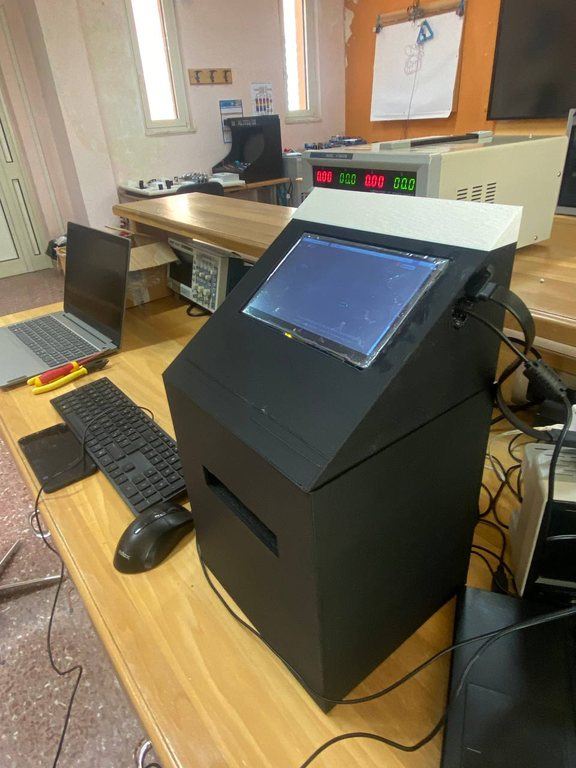
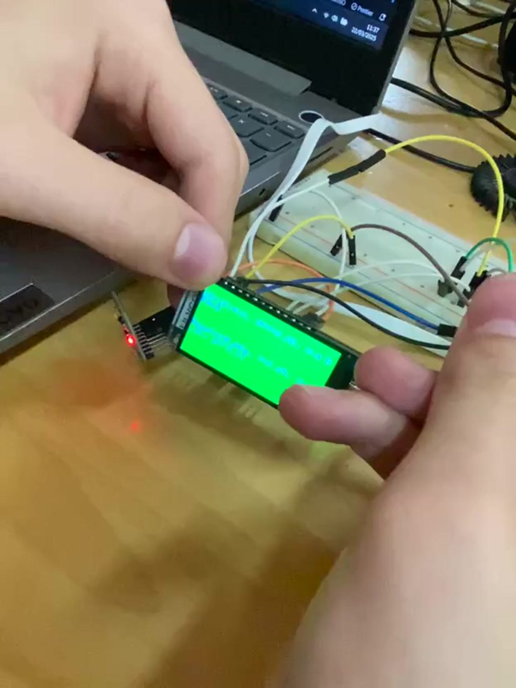
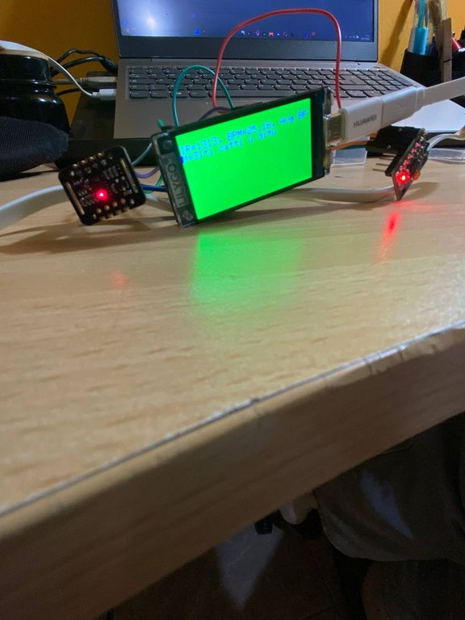
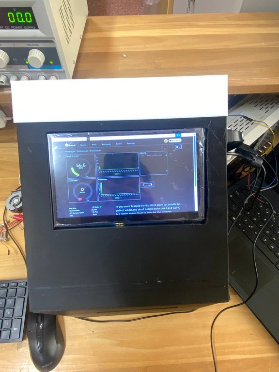
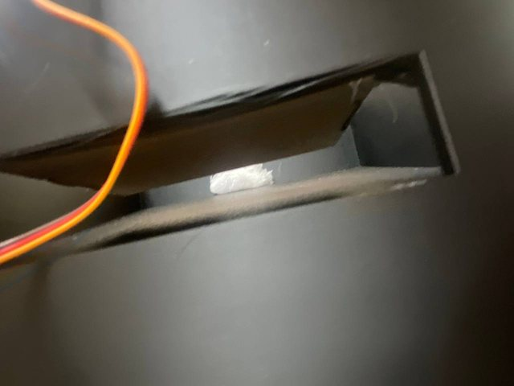
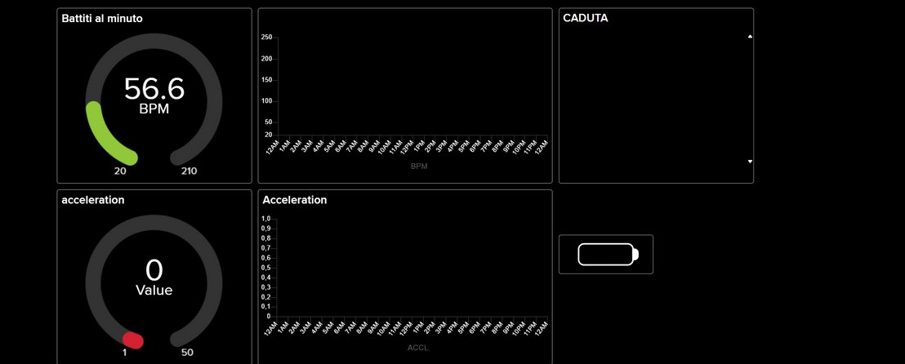
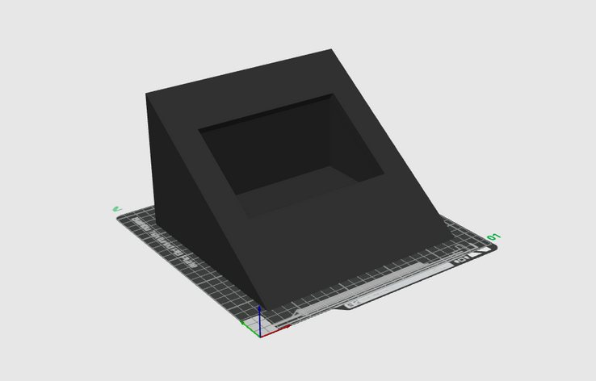

Progetto di maturità · Primo prototipo (MVP)
CREATE4CARE (C4C)
Piattaforma hardware e software per assistere a casa persone anziane o fragili: un braccialetto smart, un hub domestico e il monitoraggio a distanza per i familiari.

L’idea
CREATE4CARE nasce dalla volontà di ridurre il divario nell’accesso alle cure e di favorire l’inclusione sociale e sanitaria di persone anziane o con disabilità. L’obiettivo è garantire sicurezza, autonomia e maggiore serenità, sia a chi usa il sistema sia ai suoi familiari, con un’assistenza continua anche a domicilio.
Il sistema
La piattaforma unisce due dispositivi interconnessi e una dashboard di monitoraggio.
Braccialetto smart: rileva in tempo reale la frequenza cardiaca e, con un accelerometro, le cadute accidentali. Mostra i dati sul display integrato e li invia via Wi-Fi alla dashboard.
Hub domestico: con schermo touch e basato su Raspberry Pi, visualizza i dati in tempo reale ricevuti tramite la piattaforma cloud, ne conserva lo storico e comanda il sistema di somministrazione automatica dei farmaci.
Dashboard web: permette ai familiari di consultare i parametri vitali a distanza.
Il braccialetto
Realizzato attorno a una scheda ESP32-S3 con display integrato, che gestisce un sensore ottico di battito cardiaco, un accelerometro e la comunicazione Wi-Fi. Il firmware è scritto in C++ con PlatformIO e usa FreeRTOS per eseguire in parallelo lettura dei sensori, display e invio dei dati. L’alimentazione è a batteria LiPo, per lasciare libertà di movimento.
L’hub e la struttura 3D
La struttura dell’hub è stata progettata con Fusion e stampata in 3D con una BambuLab X1 Carbon. Nel prototipo è divisa in due parti mobili, così da correggere le imperfezioni di stampa senza rifare l’intero pezzo, risparmiando materiale, energia e tempo. Il cuore dell’hub è un Raspberry Pi 2 B con schermo touch; un programma in Python comanda il servomotore del dispenser.
Somministrazione automatica dei farmaci
Il sistema prevede più slot indipendenti, ciascuno comandato da un servomotore dedicato: a orari programmati lo slot si apre a ventaglio e fa scendere la dose prescritta in un bicchierino. Nel progetto lo slot si richiude solo dopo la conferma dell’utente sullo schermo dell’hub, per favorire l’aderenza alla terapia. Il codice di controllo è stato completato, ma il meccanismo non è stato ancora collaudato.
Stato di sviluppo
Dimostrato nel prototipo: misura del battito cardiaco, rilevamento delle cadute con allarme sul display e invio dei dati alla dashboard.
Realizzato ma non ancora collaudato: sistema di somministrazione dei farmaci (codice completato) e conferma sullo schermo.
Previsto: misura di temperatura e pressione corporea, funzioni aggiuntive per la sicurezza domestica e analisi dei dati con IA.
Il progetto è stato presentato al Premio Nazionale Innovazione Digitale Anitec-Assinform 2024/25, categoria ICT e disabilità.
Ricerca dei costi
Il progetto è stato preceduto da un’analisi dei costi: selezione dei componenti, confronto tra fornitori e stima della spesa complessiva per realizzare il prototipo.
Team e ruoli
Progetto sviluppato da tre studenti della classe 5ª X (Elettronica ed Elettrotecnica) dell’IIS “F. Severi” di Gioia Tauro, con il supporto dei docenti dell’istituto e di una startup legata all’Università di Reggio Calabria, interessata a sostenere il progetto come sponsor.
Il mio ruolo: progettazione, coordinamento del team, realizzazione del braccialetto smart e ricerca dei componenti. Gli altri due membri si sono occupati rispettivamente di saldature e parte fisica con stampa 3D, e dell’hub centrale con programmazione del Raspberry e web-app.
Prospettive
- Completare il progetto con un primo prototipo definitivo
- Aggiungere le funzioni previste: sensori di gas e fumo, promemoria di attività, pulsante di emergenza, videochiamata e telecamera per l’ambiente domestico
- Misurare anche temperatura e pressione corporea, già previste nella visione del prodotto
- Analizzare i dati con l’IA (pattern recognition per individuare anomalie) con il supporto della startup partner: prevista, ma non implementata per mancanza di tempo
- Personalizzare il sistema e valutarne la commercializzazione
Diritti e documentazione
© Giovanni Pio Triulcio e team CREATE4CARE. Tutti i diritti riservati: testi, immagini e idea progettuale non possono essere riprodotti o riutilizzati senza autorizzazione. Schemi, codice e documentazione tecnica non sono pubblici e sono disponibili su richiesta.
Documentazione





